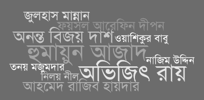

<template id="site-sidebar">
  <div class="col-lg-4 col-md-4 col-sm-6">
    <div class="sidebar">
      <!-- Sidebar -->
      <div class="widget">
        
        মুক্তমনা অভিজিৎ রায়
        (১৯৭১- ২০১৫) কর্তৃক ২০০১ সালে প্রতিষ্ঠিত এবং মানবতাবাদীদের দ্বারা
        পরিচালিত একটি আন্তর্জালিক চক্র। মুক্তমনা বর্তমান সমাজে বিদ্যমান
        অদৃষ্টবাদ, ভাববাদ আর বিশ্বাসনির্ভর লাগাতার প্রকাশনা আর প্রচারণার
        বিপরীতে একটি বিজ্ঞানমনস্ক এবং যুক্তিবাদী ধারা প্রবর্তনে
        বদ্ধপরিকর।
      </div>

      <div class="widget">
        
        <a href="https://mm-ananta.azurewebsites.net/avijit/"><h3>অভিজিৎ আর্কাইভ</h3></a>
        অভিজিৎ রায় রচিত সকল প্রবন্ধ, নিবন্ধ, গবেষণা, বই ও ব্লগ পোস্টের আর্কাইভ।
      </div>

      <div class="widget">
        
        <a href="https://mm-ananta.azurewebsites.net/"><h3>অনন্ত আর্কাইভ</h3></a>
        অনন্ত বিজয় দাশ রচিত  সকল প্রবন্ধ, নিবন্ধ, গবেষণা, বই ও ব্লগ পোস্টের আর্কাইভ।
      </div>

      <div class="widget">
        
        <h3> স্মরণ</h3>
        ইসলামিস্টদের হাতে নিহত সকল মুক্তমনা লেখক, ব্লগার ও অনলাইন এক্টিভস্টের জীবণ ও কর্ম নিয়ে।
      </div>
    </div><!-- /#sidebar-wrapper -->
  </div>
</template>
